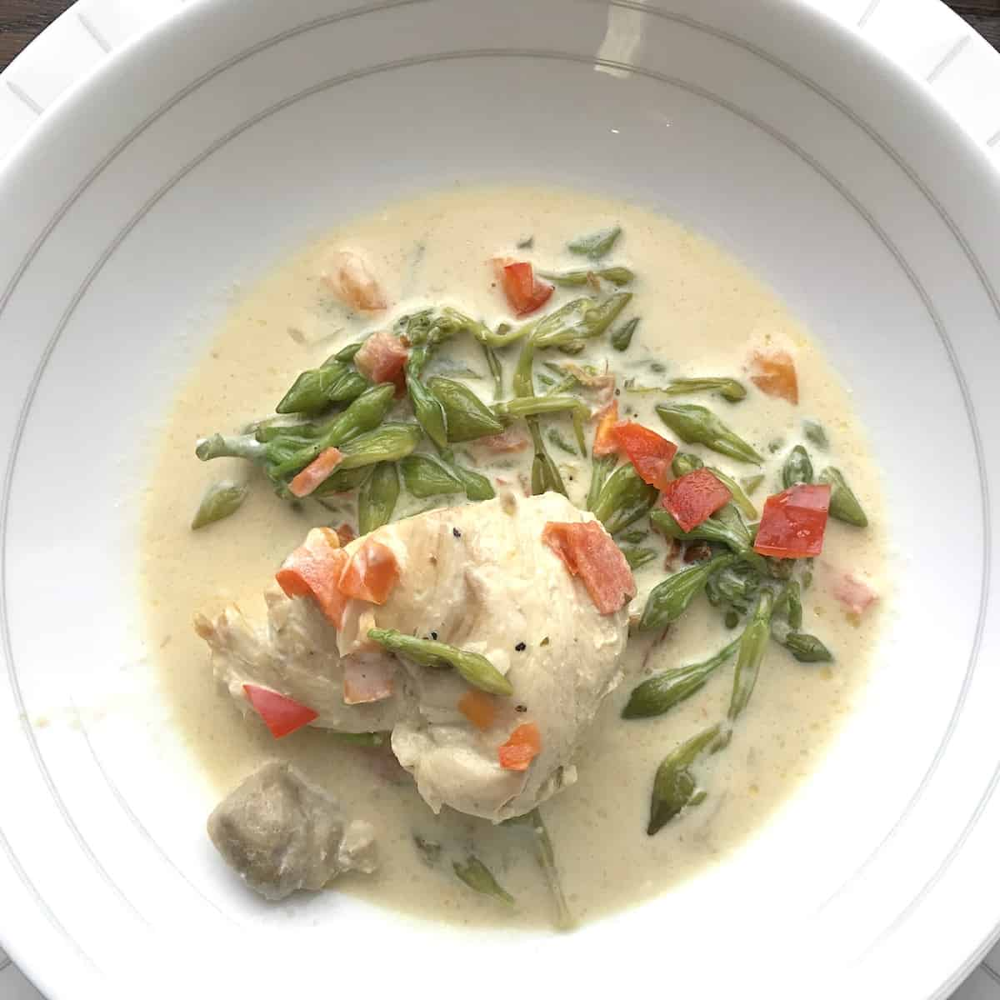

Chicken with Loroco in Cream Sauce

Description
This simple Guatemalan meal, which is rich, creamy, and incredibly delicious, might become your NEW favorite way to eat chicken!
Known in English as "chicken with loroco in cream sauce," "pollo en crema y loroco" is a dish that combines delicate chicken with loroco, an edible flower that is famous in both Guatemala and El Salvador.
It's a lavish yet straightforward dish that's manageable on a busy weekday and appetizing enough for company. It takes roughly 45 minutes to complete!
Ingredients
- chicken, cut into serving pieces with skin and excess fat removed.
- heavy cream (Go for 35% cream. Don't try to cut calories by using half and half as it will curdle)
- butter
- loroco buds (fresh or frozen)
- fresh garlic
- white onion
- leek
- sweet red pepper
- celery
- fresh thyme
- bay leaf
- salt and pepper
Steps
- Thaw the frozen loroco and drain any excess moisture and blot dry with a paper towel. If you're using fresh loroco, wash it thoroughly and pat dry.
- Place the chicken pieces in a large pot with enough water to cover the chicken. Add salt.
- Cover, bring to a boil then reduce heat to medium and let simmer for 25 minutes or until cooked. Skim off any grey foam that might appear while cooking.
- Heat the butter in a large, deep skillet until melted. Add the finely-diced onion, chopped garlic, thinly sliced celery and leeks, chopped sweet red pepper, salt and pepper.
- Add the bay leaf and fresh thyme leaves, cooking until fragrant.
- Pour the strained chicken broth into the skillet with the vegetables and heat to boiling. Reduce heat to medium and simmer.
- Add the heavy cream, stirring while pouring it into the skillet. Bring slowly to a simmer over medium-low heat.
- Return the chicken to the skillet and spoon the cream sauce over the chicken. Cover and simmer for five minutes until flavours merge. Adjust salt to taste.
- Garnish the pollo con loroco with red pepper slivers or sprigs of thyme. Serve with fluffy white rice and tortillas del comal.
Nutrition Facts (per serving)
- Calories: 771
- Fat: 65g
- Carbs: 9g
- Protein: 38g
Back to top of page
Return to Homepage